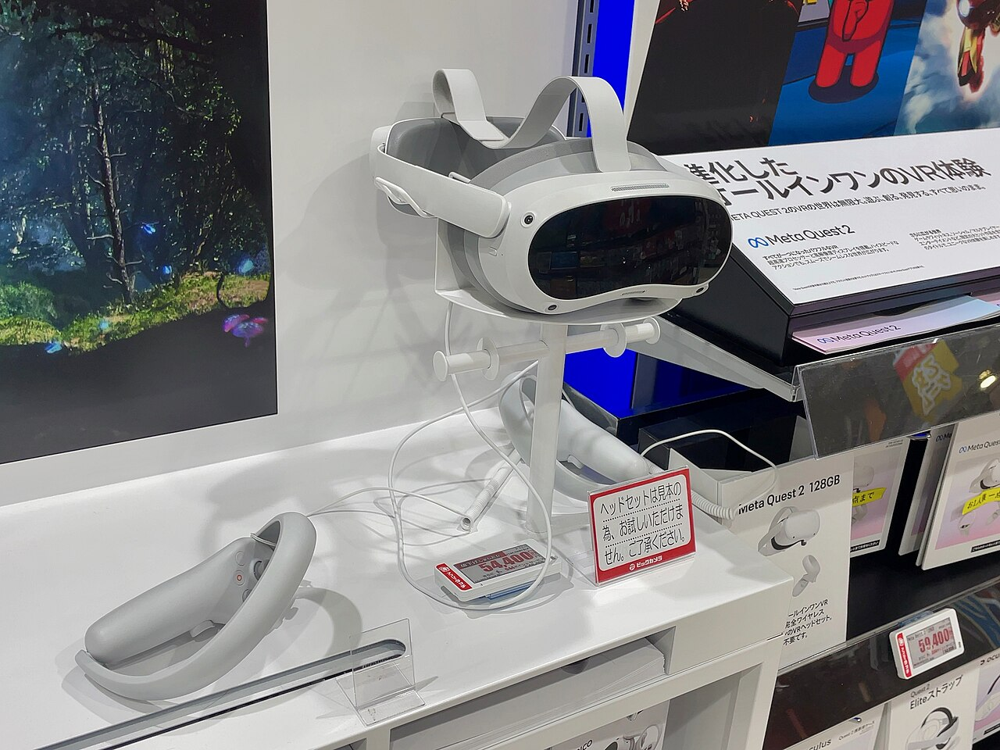

1. Runtime·입력·활성화 조건
1.1 OpenXR Session, Profile and Input Activity

헤드셋과 좌우 controller 외형입니다. 실제 통합에서는 interaction profile과 input_active를 확인해 pose와 button·axis를 구분했습니다.
헤드셋 기반 inside-out tracking은 장치에 달린 카메라·센서로 공간 움직임을 추정하며, 별도 Lighthouse 광원을 전제로 하지 않습니다. 로봇 application은 이 추정기의 원시 영상이 아니라 runtime이 제공하는 pose와 action을 받습니다. Tracking이 정상이어도 focus·interaction profile·action activity가 맞지 않으면 조작 입력이 비어 있을 수 있으므로, 공간 추적과 버튼 경로를 나눠 진단했습니다.[TRACK]
헤드셋과 PC runtime을 연결한 뒤 session이 controller pose와 action을 갱신합니다. MiMicX는 snapshot의 connected·FOCUSED·hand 발견·interaction profile을 확인합니다. Profile이 다르면 같은 trigger라도 analog value 또는 digital click으로 들어올 수 있습니다.
Pose가 유효한데 button·squeeze가 0이라면 값을 0으로 누르고 있는 것인지 action이 inactive인지 먼저 구분합니다. 특히 진단 script와 MiMicX를 동시에 실행하면 script가 focus를 가져가 다른 session이 입력을 받지 못할 수 있습니다.
1.2 OpenXR Frame Loop and the Single Runtime Snapshot
OpenXR runtime은 application이 session·action set·reference space를 만들어 입력을 조회하도록 합니다. MiMicX는 좌우 hand subaction을 가진 pose·float·boolean action을 등록하고 runtime worker 한 곳에서 갱신합니다. UI 조회와 robot teleop이 별개의 XR session을 경쟁적으로 소유하지 않도록 같은 snapshot을 사용합니다.
| 순서 | 처리 | 생성 값 |
|---|---|---|
| 1 | session state와 focus 확인 | 입력 조회 가능 상태 |
| 2 | action sync, interaction profile·float/boolean/pose activity 조회 | inputs + input_active |
| 3 | wait frame → begin frame | predicted display time |
| 4 | 그 시각의 hand space를 app space에 locate | position(m), quaternion(x,y,z,w), pose_valid |
| 5 | 좌우 sample과 session 상태를 snapshot으로 게시 | 동일 owner의 상태·입력 |
| 6 | 필요한 graphics layer 제출 → end frame | 다음 runtime frame 진행 |
Pose는 position-valid와 orientation-valid flag를 모두 확인한 뒤 사용합니다. Runtime에 따라 graphics session의 정상 frame 제출이 있어야 위치 추적이 갱신되므로 최소 black frame 경로도 둡니다. 화면에 로봇 영상을 그리는 기능과 입력 runtime을 유지하는 frame 제출은 다른 목적입니다.
Quaternion 순서는 x,y,z,w입니다. 행렬로 변환할 때 이를 w,x,y,z 순서로 잘못 해석하면 위치는 맞는데 회전만 뒤틀릴 수 있습니다. Frame predicted time은 공간 추정에 쓰는 시각이고 snapshot timestamp는 application이 sample을 게시·수신하는 시각입니다. 두 값을 곧바로 같은 clock의 latency로 빼지 않습니다.
1.3 Session Readiness Is Not the Pose Gate
| 조건 | 확인 내용 | 충족하지 못하면 |
|---|---|---|
| CONNECTED | runtime 연결 상태 | live reference 초기화 |
| FOCUSED | 해당 session에 입력 focus 존재 | pose target 처리 중단 |
| hand found + profile | 선택 side와 유효 interaction profile | 입력 binding 진단 |
| pose valid | 위치·회전 모두 유효 | 현재 상대 pose 계산 보류 |
| robot Task TeleMove | absolute task command를 받을 운전 상태 | mode 불일치 진단·복구 경로 |
장치가 목록에 보이는 것, session이 연결된 것, focus가 있는 것과 robot 운전 상태는 서로 다릅니다. Ready 조건을 통과한 뒤에도 사용자가 정한 pose gate와 stick jog 여부를 따로 판단합니다. Gripper 입력과 application button도 각각 별도 경로입니다.
1.4 Hold, Toggle and Pose Modes with a Paired Reference
| 모드 | gate의 의미 |
|---|---|
| hold | 선택 axis가 threshold를 넘는 동안 활성 |
| toggle | 선택 입력의 rising edge마다 on/off 반전 |
| pose | 입력 버튼 threshold 없이 pose 사용 허용 |
| disabled | pose drive 비활성 |
기본 source는 squeeze axis이고 threshold는0.35입니다. Trigger는 기본 gripper 입력과 분리합니다. Pose gate가 새로 활성화되면 현재 robot TCP와 controller pose를 동시에 reference로 잡습니다. Reference가 아직 없으면 첫 유효 sample을 저장하고 이후 sample에서 상대 변화를 계산합니다.
손을 놓는 것은 XR backend session을 종료하는 명령과 다릅니다. Hold gate 해제에서는 현재 robot pose를 한 번 안정화 목표로 사용하고 pose motion을 멈춥니다. 다시 활성화할 때 새로운 시작점을 잡아 이전 손 위치와 현재 손 위치의 차이를 갑작스러운 목표로 사용하지 않습니다.
1.5 Profile Binding, Click Promotion and Pose Fallback
Pico도 MetaQuest backend 계열을 사용하지만 runtime이 제공하는 interaction profile의 action 경로는 다를 수 있습니다. Session 생성 단계에서는 analog+click, analog-only, digital-click, trigger-only binding 전략을 차례로 시도합니다. 이 단계는 어느 action 경로를 runtime에 제안할지 정하는 단계입니다.
입력 정규화는 value가0 이하이고 대응 click이 true이면 숫자 채널을1로 승격합니다. 이는 연속 압력을 새로 측정하는 것이 아니라 digital 눌림을0/1로 표현하는 것입니다. 별도의 input_active는 action이 현재 profile에서 사용 가능한지 나타냅니다. 숫자0과 action inactive를 같다고 보면 release와 미지원 입력을 구분할 수 없습니다.
| 정규화 후 상태 | 사용하는 gate |
|---|---|
| 설정 axis action이 active | 그 숫자 값과 threshold 비교 |
| axis inactive, 대응 click action active | click에서 정규화된 숫자 값으로 비교 |
| 둘 다 usable하지 않음 + fallback 허용 | pose gate 허용; 바깥 ready·Task TeleMove 조건은 유지 |
| axis active, value0, click false | release — pose fallback으로 무시하지 않음 |
| toggle/disabled 또는 non-Pico profile | 해당 mode 규칙; 이 hold fallback과 구분 |
Pure pose fallback에서는 squeeze를 놓는 동작이 정지 gate가 되지 않으므로 Task TeleMove 진입·이탈이 조작 허가 경계가 됩니다. 또한 팔 pose를 읽을 수 있어도 gripper의 trigger 값까지 생기는 것은 아닙니다. Pose만 정상인 경우와 analog·button까지 정상인 경우를 따로 확인했습니다.
2. Pose 변환식 유도
2.1 Translation: Difference → Calibration → Scale → Unit Conversion
xₖ와 x₀는 tracking base에서 읽은 현재·활성화 기준 위치이며 단위는 m입니다. 먼저 δx=xₖ−x₀를 구하고, C로 robot base 방향에 맞춘 다음 translation scale sₜ를 적용합니다. 현재 로봇 위치에 더하기 전에 1,000을 곱해 mm로 바꿉니다. 원점이 다른 두 장치의 absolute 위치를 직접 더하지 않습니다.
| 단계 | 값·해석 |
|---|---|
| 시작 robot TCP | pᵣ₀=(400,100,300) mm |
| 장치 상대 이동 | δx=(0.020,0,0) m |
| 축 정렬 | C=Rz(90°) → Cδx=(0,0.020,0) m |
| 이동 배율 | sₜ=0.5 → (0,10,0) mm |
| 최종 목표 | p_cmd=(400,110,300) mm |
C는 상대 변위의 방향을 바꾸는 회전입니다. 이 계산에는 tracking 원점과 robot 원점 사이의 translation offset을 다시 넣지 않습니다. 두 origin을 직접 일치시키는 absolute hand-eye pose 복사가 아니라, 활성화 이후 움직임만 로봇의 시작점에 적용하기 때문입니다.
2.2 Rotation: Relative Matrix → Rotation Vector → Scaled Rotation
Rₓ₀와 Rₓₖ는 tracking base에서 본 장치 회전입니다. Rₓ₀ᵀRₓₖ는 기준 장치 좌표에서 현재 자세가 얼마나 달라졌는지를 나타냅니다. Log는 이 회전을 φ=θa 형태의 rad 단위 벡터로 바꾸며, a는 단위 회전축이고 벡터 길이 θ가 회전각입니다. Euler angle 세 성분을 빼는 계산과 다릅니다.
기본 d=5π/180 rad입니다. 회전이 5° 이하면 영벡터, 5°를 넘으면 같은 축을 유지하면서 회전각에서 5°를 뺍니다. 이후 sᴿ를 곱하고 Exp로 행렬을 복원합니다. 예를 들어 입력 상대 회전 15°에 sᴿ=0.5를 적용하면 (15−5)×0.5=5°가 됩니다. 15×0.5=7.5°가 아닙니다.
회전 배율과 deadzone은 서로 다른 역할입니다. 배율은 의도한 회전 전체의 크기를 줄이고, deadzone은 작은 orientation 흔들림의 영향을 제거합니다. 현재 resolver는 두 scale을 0~1 범위로 제한하므로 저장 설정과 실제 적용값도 함께 봅니다.
2.3 Why the Intermediate Basis Matrix Is Necessary

| 행렬 | 좌표 변환 |
|---|---|
| Rₓ₀ | 활성화 장치 기준 → tracking base |
| C | tracking base → robot base |
| Rᵣ₀ᵀ | robot base → 활성화 robot TCP 기준 |
| B=Rᵣ₀ᵀCRₓ₀ | 활성화 장치 기준 → 활성화 TCP 기준 |
상대 회전 ΔR은 활성화 순간의 장치 축으로 표현돼 있습니다. 이를 TCP 기준으로 바꾸려면 BΔRBᵀ가 필요하고, 그 결과를 시작 robot 자세 Rᵣ₀에 적용합니다. C를 한 번 곱하거나 RPY 성분을 교환하는 방법으로는 이 앞뒤 basis 관계를 보존할 수 없습니다.
움직임이 없으면 R_cmd가 Rᵣ₀와 같아야 하고, scale 1·deadzone 0이면 장치의 전체 상대 회전을 방향 정렬한 결과와 같아야 합니다. 이 두 조건은 실제 장비 시험 수치가 아니라 변환식을 점검하는 수학적 기준입니다.
3. 조그와 로봇 명령
3.1 Thumbstick Mapping and Additive Robot-Base Motion
Stick의 두 입력 축은 각각 robot base의x/y/z 또는None에 배정합니다. A는 그 mapping을 표현하는3×2 행렬이며, None인 열은0입니다. 같은 robot 축을 두 입력에 배정하면 그 축의 증분은 더해집니다. Positive 입력은 선택한 robot 축의 positive 방향으로 적용합니다.
현재 deadzone 기본값은0.20이며 경계 밖을 남은 범위로 재정규화합니다. 새 등록의 두 축 기본값은None이므로 명시적으로 배정해야 jog가 생깁니다. 기존 planar_xy 설정은 stick X→robot Y, stick Y→robot X로 해석합니다. 원래 평면 조그는 이 legacy mapping의 한 경우이며 현재 기능 전체를XY 전용으로 제한하지 않습니다.
| 값 | 결과 |
|---|---|
| stick X=0.6, Y=0, d=0.2 | D(X)=0.5, D(Y)=0 |
| X→robot Y | δo=(0,0.5,0) mm |
| 동시에 pose 위치=(400,110,300) mm | 첫 합성 목표=(400,110.5,300) mm |
Pose gate가 false여도 Task TeleMove에서 유효하게 mapping된 stick을 조작하면 현재 robot pose를 seed로 jog 전용 이동을 할 수 있습니다. “squeeze를 놓으면 모든 입력 경로가 정지한다”는 설명은 이 구성과 맞지 않습니다. Button polling만 하는 Idle 경로는 이 motion 경로와 다릅니다.
3.2 Jog Timestamp, Accumulator and Neutral Re-anchor
첫 sample이거나 timestamp가 증가하지 않으면 이 jog 경로는 control_period(기본0.02 s)를 사용합니다. 양의 timestamp 차이는 최대0.25 s로 제한합니다. SpaceMouse가 첫 timestamp에서 적분을 건너뛰는 규칙과 다르므로 같은 시간 helper로 단순화하지 않습니다.
Stick이 움직임 상태에서 중립으로 돌아오면 virtual offset을identity로 지우고 현재 robot pose와 현재 controller sample을 새 기준으로 잡습니다. Pose gate 활성화 event에서도 offset·시간 상태를 재설정합니다. 누적 offset을 새 base에 다시 더하는 중복 적용을 피하기 위해서입니다. 중립이 지속되면 추가 jog를 만들지 않고 pose-derived target을 유지합니다.
3.3 Final Six-Value Target and the Controller Boundary
위치 세 값은 mm, roll·pitch·yaw 세 값은 degree로 인코딩해 absolute task target으로 보냅니다. 회전 행렬 계산에는 rad 단위 rotation vector를 사용하고, 최종 SDK 경계에서만 RPY degree로 바꿉니다. “6D pose”는 위치+회전 표현의 성분 수이며 로봇의 관절 수를 새로 정의하는 말이 아닙니다.
Robot worker는 이 목표와 velocity/acceleration ratio, 대상 arm index를 함께 Task TeleMove 명령으로 전달합니다. 상대 입력에서 계산했어도 최종 명령은 movetelel_abs입니다. Robot-base target과 모니터링용 다른 frame의 pose를 바꾸어 전송하면 좌표가 달라지므로 명령 source를 고정했습니다.
이 운영 경로에서는 live op_state의 TELE_OP 값17을 읽어 teleop 입력 분기로 들어갑니다. 설정 화면의 mode 이름만으로 명령을 실행하지 않습니다. SDK velocity/acceleration ratio는 controller 명령에 붙는 비율이고, 위의 translation/rotation scale은 입력 변화에서 목표를 만드는 배율입니다. 두 값을 같은 gain으로 묶지 않습니다. 저장된 command의 한 sample은6개 값이며 시간축으로 쌓인 배열은(T,6)입니다.
MiMicX는 목표를 만들고 전송하는 상위 계층입니다. 역기구학과 실제 joint 추종은 robot controller가 수행합니다. SDK 호출 성공, 실제 pose feedback의 변화, 물체 조작 완료는 각각 다른 확인입니다. 목표 값만 움직인다고 실제 팔이 따라갔다고 판단하지 않았습니다.
4. 그리퍼·버튼 동작·복구
4.1 Gripper Ownership and the Analog Command Scale
Analog mode는 trigger fraction을open과close 설정 사이에 보간하고 integer raw scale0~1000으로 전송합니다. Open=0,close=1000이면f=0.35의 위치 목표는350입니다. 이는0.35 mm나35% force를 뜻하지 않습니다. 장치 설정의open/close 방향이 반대면 보간 방향도 달라집니다.
| 모드 | 동작 |
|---|---|
| analog | 매 입력 fraction에 비례하는 위치 목표 |
| hold | threshold를 넘으면close, 놓으면open |
| toggle | rising edge마다gripper 상태 반전 |
| disabled | 해당 binding의gripper 처리 없음 |
대상은 해당 arm의end-effector owner로 해결합니다. 같은 robot에서 발견한 첫 gripper를 임의로 택하면 양팔 구성의 다른 도구를 움직일 수 있습니다. Force 선행 설정이 필요한 장치는 force command 후 position을 보내고, 최종 SDK 경계에서는float 대신integer position을 사용합니다.
4.2 Button Edges and Application Actions Without Pose Motion
Primary·secondary button은collect_start,collect_stop,robot_idle,robot_task_teleop 또는none으로 설정합니다. 길게 누르는 동안 매 frame 반복 실행하지 않고rising edge에서 한 번 실행합니다. 새 등록의action 기본값은none입니다.
Idle에서도 button action을 감시하므로 controller로 recording이나mode 전환을 요청할 수 있습니다. 이때pose target을 계속 생성하는 것은 아닙니다. Collect start는 기존backend preflight와 선택 task를 사용하고robot mode를 임의로Task TeleMove로 바꾸지 않습니다. Collect stop의session 종료와robot Idle 처리는 같은backend의기존운영 흐름으로 이어집니다.
Mode action은 저장된 mode 문자열뿐 아니라 live op_state를 확인합니다. 저장 mode는 Task인데 실제 robot은 Idle인 상태를 같은 ready로 보지 않습니다. Button 상태, application action, 실제 운전 상태를 분리해야 요청이 처리되지 않은 이유를 찾을 수 있습니다.
4.3 Focus Loss, Reference Reset and Recovery
Disconnect, unfocused, hand/profile 없음, invalid pose에서는 해당 binding의 live reference·gate·jog 상태를 정리합니다. 저장된 calibration 선택은 유지합니다. 다음 유효 active sample에서 현재 robot과 controller를 다시 대응시켜, runtime origin 변화가 오래된 reference에 합성되지 않게 합니다.
진단용 XR script도 별도 session의 focus를 가져갈 수 있습니다. Host debug에서 pose를 본다고 동시에 MiMicX가 같은 입력을 받는 것은 아닙니다. 단일 owner의 snapshot에서 session state, profile, pose와 action을 함께 확인하는 이유입니다.
5. 데이터 의미와 설계 판단
5.1 Command, Feedback and the Two Time Domains
Snapshot의 tracking pose는 robot command의 원재료이고, 계산한 target은 상위 제어의 의도입니다. Robot feedback은 실제 TCP·joint 상태입니다. 수집할 때 이 세 값을 서로 치환하지 않습니다. 실제 motion이 없으면 pose sample → gate → frame 변환 → command result → feedback 순서로 경계를 나누어 봅니다.
XR predicted display time은 runtime clock의 공간 추정 시각이고, episode timestamp는 application의 wall-clock 축일 수 있습니다. 두 clock의 origin을 맞추지 않고 차이를 end-to-end latency라고 계산하지 않습니다. 같은 snapshot을 소비하는 구조는 owner의 일관성을 제공하지만 stream 사이의 실측 동기화 오차와는 다른 문제입니다.
5.2 Operational Checks
| 경로 | 기대하는 관찰 |
|---|---|
| Pose gate | 누름/해제·기준 재설정 |
| Stick | 선택 robot base 축·중립에서도 pose 유지 |
| Gripper | 중간 fraction·owner·실제 open/close |
| Buttons | hold 중 중복 없음·release 뒤 재누름 |
| Mode | 실제 TeleT/Idle 전환·수집 task 일치 |
같은 OpenXR backend를 쓴다고 Quest에서 확인한 결과를 Pico 전체의 결과로 옮기지 않았습니다. Runtime·profile 차이를 나누어 관찰하고 구체적인 구현·회귀 과정은 XR 컨트롤러 응용에서 설명합니다.
5.3 Engineering Note
Fallback은 문제 전체를 해결하는 마법 같은 우회로가 아니었습니다. Pose gate를 복구해 팔이 움직여도 gripper action까지 복구된 것은 아닙니다. 어느 경계의 기능을 되살렸고 무엇을 관측하고 있는지 명확히 하는 것이 실제 운영과 진단에 필요했습니다.
또한 숫자0은 정상 release일 수도, 사용할 수 없는 action일 수도 있습니다. 값과 유효성을 함께 전달해야 runtime 차이를 다루면서 사용자의 입력 의도를 잃지 않을 수 있었습니다.
References
- [XR] Khronos — XrActionStateFloat
입력 값과 isActive의 구분. 실제 gate·fallback·버튼 동작은 MiMicX 구현으로 설명합니다.
- [TRACK] PICO — VR, MR, AR and tracking
헤드셋 기반 공간 추적의 개념. 로봇 target 변환과 입력 fallback은 로컬 구현을 설명합니다.